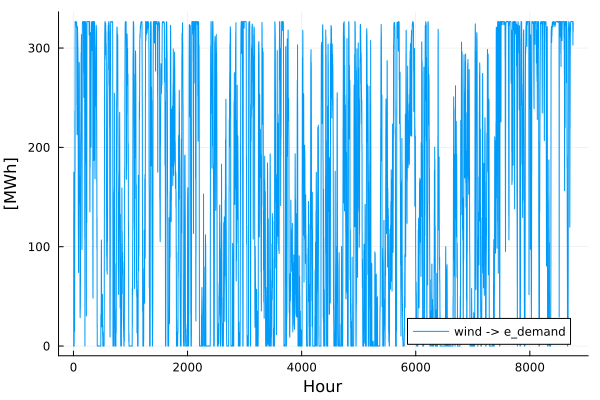
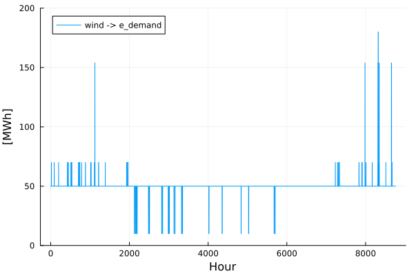

The Basics
Welcome to the first tutorial, here you will learn the basics of how to run TulipaEnergyModel. Good luck! 🌷
Load data and run Tulipa
If you have not done so already, please follow the steps in the pre-tutorial first. You should have a VS Code project set up before starting this tutorial.
Ensure you are using the necessary packages by running the lines below:
import TulipaIO as TIO
import TulipaEnergyModel as TEM
using DuckDB
using DataFrames
using PlotsFollow along in this section, copy-pasting into your my_workflow.jl file.
In VS Code, you can press (CTRL+ENTER) to run the current line,
(SHIFT+ENTER) to run the current line and go to the next line.
To run multiple lines together, you need to highlight the part you want to run first,
and then hit (CTRL+ENTER) or (SHIFT+ENTER).
Or paste everything and press the run arrow (top right in VS Code) to run the entire file.
We need to create a connection to DuckDB and point to the input and output folders:
input_dir = joinpath(@__DIR__, "my-awesome-energy-system/tutorial-1")
output_dir = tempdir()
connection = DBInterface.connect(DuckDB.DB)DuckDB.DB(":memory:")Here we create a temporary directory for the output. But, you can point to any directory you want. But! remember that if the output directory does not exist yet, you need to create the 'results' folder, otherwise it will error later.
Let's use TulipaIO to read the files and list them:
TIO.read_csv_folder(connection, input_dir)
TIO.show_tables(connection) # View all the table names in the DuckDB connection
# If your output window isn't large enough, it'll be cut-off
# Just expand the window and rerun the line| Row | name |
|---|---|
| String | |
| 1 | asset |
| 2 | asset_both |
| 3 | asset_commission |
| 4 | asset_milestone |
| 5 | assets_profiles |
| 6 | flow |
| 7 | flow_both |
| 8 | flow_commission |
| 9 | flow_milestone |
| 10 | profiles_rep_periods |
| 11 | rep_periods_data |
| 12 | rep_periods_mapping |
| 13 | timeframe_data |
Now try viewing a specific table:
TIO.get_table(connection, "asset") # Or any other table name| Row | asset | type | capacity | vintage_method | investment_integer | technical_lifetime | discount_rate |
|---|---|---|---|---|---|---|---|
| String | String | Float64 | String | Bool | Int64 | Float64 | |
| 1 | ccgt | producer | 800.0 | aggregated | true | 15 | 0.05 |
| 2 | e_demand | consumer | 0.0 | aggregated | false | 15 | 0.05 |
| 3 | ens | producer | 1000.0 | aggregated | false | 15 | 0.05 |
| 4 | ocgt | producer | 100.0 | aggregated | true | 15 | 0.05 |
| 5 | solar | producer | 500.0 | aggregated | true | 15 | 0.05 |
| 6 | wind | producer | 400.0 | aggregated | true | 15 | 0.05 |
| 7 | electrolizer | conversion | 100.0 | aggregated | true | 15 | 0.05 |
| 8 | h2_demand | consumer | 100.0 | aggregated | false | 15 | 0.05 |
| 9 | smr_ccs | producer | 100.0 | aggregated | true | 15 | 0.05 |
Add any missing columns and fill them with defaults:
TEM.populate_with_defaults!(connection)
# Explore the tables in DuckDB (again)
TIO.get_table(connection, "asset")
# Notice there are now a lot of new columns filled with default values| Row | asset | type | capacity | vintage_method | investment_integer | technical_lifetime | discount_rate | capacity_storage_energy | consumer_balance_sense | economic_lifetime | energy_to_power_ratio | investment_integer_storage_energy | is_seasonal | max_ramp_down | max_ramp_up | min_operating_point | ramping | storage_method_energy | unit_commitment | unit_commitment_integer | use_binary_storage_method |
|---|---|---|---|---|---|---|---|---|---|---|---|---|---|---|---|---|---|---|---|---|---|
| String | String | Float64 | String | Bool | Int32 | Float64 | Float64 | String | Int32 | Float64 | Bool | Bool | Float64 | Float64 | Float64 | Bool | String | String | Bool | String? | |
| 1 | ccgt | producer | 800.0 | aggregated | true | 15 | 0.05 | 0.0 | == | 1 | 0.0 | false | false | 0.0 | 0.0 | 0.0 | false | none | none | false | missing |
| 2 | e_demand | consumer | 0.0 | aggregated | false | 15 | 0.05 | 0.0 | == | 1 | 0.0 | false | false | 0.0 | 0.0 | 0.0 | false | none | none | false | missing |
| 3 | ens | producer | 1000.0 | aggregated | false | 15 | 0.05 | 0.0 | == | 1 | 0.0 | false | false | 0.0 | 0.0 | 0.0 | false | none | none | false | missing |
| 4 | ocgt | producer | 100.0 | aggregated | true | 15 | 0.05 | 0.0 | == | 1 | 0.0 | false | false | 0.0 | 0.0 | 0.0 | false | none | none | false | missing |
| 5 | solar | producer | 500.0 | aggregated | true | 15 | 0.05 | 0.0 | == | 1 | 0.0 | false | false | 0.0 | 0.0 | 0.0 | false | none | none | false | missing |
| 6 | wind | producer | 400.0 | aggregated | true | 15 | 0.05 | 0.0 | == | 1 | 0.0 | false | false | 0.0 | 0.0 | 0.0 | false | none | none | false | missing |
| 7 | electrolizer | conversion | 100.0 | aggregated | true | 15 | 0.05 | 0.0 | == | 1 | 0.0 | false | false | 0.0 | 0.0 | 0.0 | false | none | none | false | missing |
| 8 | h2_demand | consumer | 100.0 | aggregated | false | 15 | 0.05 | 0.0 | == | 1 | 0.0 | false | false | 0.0 | 0.0 | 0.0 | false | none | none | false | missing |
| 9 | smr_ccs | producer | 100.0 | aggregated | true | 15 | 0.05 | 0.0 | == | 1 | 0.0 | false | false | 0.0 | 0.0 | 0.0 | false | none | none | false | missing |
Run, baby run!
energy_problem =
TEM.run_scenario(connection; output_folder=output_dir)EnergyProblem:
- Model created!
- Number of variables: 70080
- Number of constraints for variable bounds: 70080
- Number of structural constraints: 87600
- Model solved!
- Termination status: OPTIMAL
- Objective value: 2.175768638386125e8
- Objective breakdown:
- assets_fixed_cost_aggregated_vintage_method: 0.0
- assets_fixed_cost_compact_vintage_method: 0.0
- assets_investment_cost: 0.0
- flows_fixed_cost: 0.0
- flows_investment_cost: 0.0
- flows_operational_cost: 2.175768638386125e8
- storage_assets_energy_fixed_cost: 0.0
- storage_assets_energy_investment_cost: 0.0
- units_on_operational_cost: 0.0
- vintage_flows_operational_cost: 0.0
Explore the results
Which files were created in the output folder?
Take a minute to explore them.
Because we specified an output folder to run_scenario, it automatically exported the CSVs.
But instead of exporting, you can also explore results in Julia!
Basic Plots in Julia
Take a look at the electricity production from the "wind" asset that flows to the "e_demand" asset:
using DataFrames
using Plots
flows = TIO.get_table(connection, "var_flow") # Put the "var_flow" table from DuckDB into a Julia dataframe called "flows"
from_asset = "wind"
to_asset = "e_demand"
year = 2030
rep_period = 1
filtered_flow = filter(
row ->
row.from_asset == from_asset &&
row.to_asset == to_asset &&
row.milestone_year == year &&
row.rep_period == rep_period,
flows,
)
plot(
filtered_flow.time_block_start,
filtered_flow.solution;
label=string(from_asset, " -> ", to_asset),
xlabel="Hour",
ylabel="[MWh]",
#dpi=600, # uncomment this line to save the plot in high resolution
)
For the prices, work with the dual of the constraint.
balance = TIO.get_table(connection, "cons_balance_consumer")
asset = "e_demand"
year = 2030
rep_period = 1
filtered_asset = filter(
row ->
row.asset == asset &&
row.milestone_year == year &&
row.rep_period == rep_period,
balance,
)
plot(
filtered_asset.time_block_start,
filtered_asset.dual_balance_consumer;
label=string(from_asset, " -> ", to_asset),
xlabel="Hour",
ylabel="[MWh]",
ylims=(0,200),
#dpi=600, # uncomment this line to save the plot in high resolution
)
Inspect the prices in the plot. Notice how the prices mostly match the operational costs of the dispatchable assets. However, there is an outlier. Can you explain the prices of 153.8462€/MWh in the e_demand? Hint: consider the interlinkage between hydrogen and electricity demand
Another important aspect to consider is that we are currently not allowing the model to invest in any of the technologies. It has to solve the energy problem with the currently allocated capacities. There is a column in the asset-milestone.csv file that requires true or false values for whether an asset is investable or not. Try changing the value in this column for the wind asset to true and run the model again. What differences do you see?